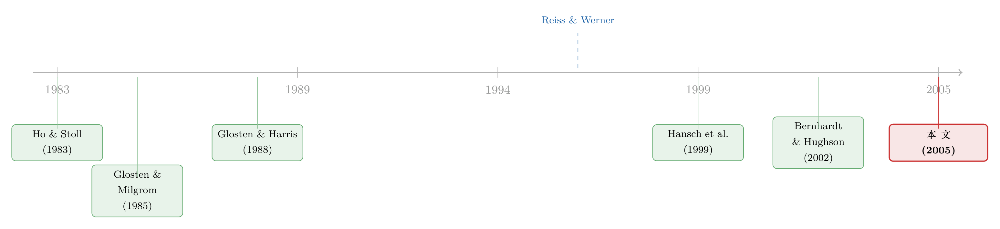

为什么大单反而能拿到折扣？——把伦敦交易所的「关系」算成一笔账
本文读的是 Bernhardt, Dvoracek, Hughson & Werner (2005, Review of Financial Studies)：在像伦敦证券交易所这样的「交易商市场」里，一笔订单的竞争不是发生在「此刻」，而是发生在「未来」。交易商愿意给老客户更多让价，是为了留住他们今后的生意；于是表面上看「大单拿折扣」，本质上是「大单大多来自被珍视的老客户」。控制住关系的价值之后，同一个客户的大单反而拿到更差的价格。
1 一个违背常识的事实
先从一个让人挠头的事实说起。
打开任何一本市场微观结构的教科书，你都会读到同一句话：大单要付出更差的价格。理由有两条，几乎写进了所有模型。其一是 信息不对称 (asymmetric information)——如果主动下单的人比报价的人懂得多，那么一张大单很可能携带着「我知道而你不知道」的坏消息，流动性提供者只能用更差的报价来保护自己 [Glosten and Milgrom (1985)、Glosten and Harris (1988)]。其二是 库存 (inventory)——做市商是厌恶风险的，吃下一张大单意味着背上一个更不平衡的头寸，他得用更高的价格来补偿自己 [Ho and Stoll (1983)]。这两条逻辑指向同一个方向：订单越大，价格越差。纽约证券交易所、美国各区域交易所、以及巴黎那种开放限价簿的市场，数据都老老实实地点了头。
可是接着，一个尴尬的反例冒了出来。
Reiss and Werner (1996) 去看伦敦证券交易所（London Stock Exchange, LSE）这种典型的「交易商市场」，却发现了完全相反的图景：大单拿到的让价（price improvement）比小单更多，只有到了异乎寻常的巨单，让价才开始回落。这就奇怪了——信息不对称和库存问题在伦敦同样存在，凭什么它们的方向在这里被整个掀翻？一定有某种「足够强」的力量，强到压过了信息和库存这两座大山。
这正是本文要追的那一个核心问题：在交易商市场里，到底是什么，让「大单拿折扣」这件反常的事成了常态？
作者给出的答案，藏在一个被前人忽略的地方——竞争发生的时点。
2 竞争，到底发生在「什么时候」？
要理解伦敦的反常，得先看清楚两类市场的根本差别。
在纽约的交易大厅、在巴黎那样的开放限价簿里，竞争是同时发生的：所有愿意接这张单的人——限价单交易者、场内交易员、做市商——一起报价，价低者得，最好的报价立刻成交。这是一种空间上的、此刻的竞争。
但在传统的交易商市场（dealer market）里，事情完全两样。交易商当然也对外挂出广为传播的报价，可一个真要下单的交易者，通常是先挑定一家交易商，然后一对一地把最终价格谈出来。在这个议价的当口，旁边并没有别的交易商来「搅局」。如果交易者对谈出来的价格不满意，他的选择其实很有限：要么捏着鼻子成交、然后下次换一家；要么现在就去找另一家重新谈——但这要花时间，信息会泄露，而且新交易商未必给得更好。
这种市场设计的直接后果，是把交易商之间的当下竞争给削弱了。一个最能说明问题的证据是：Hansch, Naik, and Viswanathan (1999) 发现，在 LSE 上超过 70% 的订单，并没有送给当时报价最好的那家交易商。换句话说,交易者常常压根不去找报价最优的人。这件事，在「客户永远和报价最好的交易商成交」的模型里（如 Rhodes-Kropf (1999)、Viswanathan and Wang (2002)）是根本推不出来的。
那么，竞争去哪儿了？
作者的回答是：它没有消失，只是被推到了时间轴上。
单看某一笔订单，它也许没有暴露在当下的竞争里；但拉长时间看，交易者会一次又一次地下单，而正是这种对未来订单的竞争，写出了 Reiss and Werner (1996) 看到的那套定价关系。老客户手里握着更值钱的「未来生意」，交易商为了留住这份持续的惠顾，才肯给他们更多让价。
这就是全文的「一个核心」：跨期竞争（intertemporal competition）。下面，作者用一个刻意写得很「瘦」的模型，把这句话变成可以求导、可以检验的命题。
3 模型：把「未来的生意」折成今天的让价
模型的设定干净得近乎苛刻，但每一个假设都服务于那一个核心。
谁在场。 风险中性的经纪商（broker）从客户那里被动地收到对某只资产的订单，他的目标是替客户把一生的交易成本压到最低，办法就是选交易商。客户、交易商、经纪商对资产价值的信息是对称的——注意，作者特意把信息不对称先关掉，就是要证明：哪怕没有信息问题，光靠关系也能造出那套反常定价。经纪商和交易商彼此知道对方是谁（LSE 上参与者数目有限，身份藏不住）。
节奏与报价。 每隔 \(t\) 单位时间，经纪商收到一张规模为 \(w\) 的订单，\(w\) 服从分布 \(G(\cdot)\)，取值于 \([0,W]\)。经纪商不打包、不拆单，原样转给交易商。交易商挂出一个报价 \(y\)（\(0\le y\le 1\)），表示他打算从这笔交易里最多抽走的份额；这个报价对所有订单规模通用，\(y\) 是外生的（可以是合谋的结果，也可以不是）。
关系会断。 每一期，以概率 \(1-p\)，经纪商会因为「价格之外的原因」被一个冲击打散、不再走这家交易商。于是 \(p\) 既可理解为关系存续的概率，也可重新解读为交易商的贴现因子。
现在是关键。当经纪商交来一张规模 \(w\) 的订单，交易商实际抽走的份额是 \(z(w;G,p,t)\)，于是给出的让价就是 \(y-z(w;G,p,t)\)（百分比口径，且 \(0\le z\le y\)）。经纪商用一条极简单的规则决定去留：只要让价不低于某个门槛 \(y-z^\*(w;G,p,t)\)，就留下；否则永不再来。
于是交易商面对一道取舍题。
未来的价值。 如果交易商给足让价、留住了这位经纪商，他对这段关系的未来价值是：
$$ V(G,p,t)=\sum_{\tau=1}^{\infty}(pt)^{\tau}\,\mathbb{E}_{G(\cdot)}\!\left[z(\tilde w;G,p,t)\,\tilde w\right]=\frac{pt}{1-pt}\,\mathbb{E}_{G(\cdot)}\!\left[z(\tilde w;G,p,t)\,\tilde w\right]. $$
这一步是把「今后每一期、每一张随机订单上能抽到的份额」按关系存续概率 \(pt\) 一期期折现、再加总——一个等比级数，收敛成那个干净的 \(\dfrac{pt}{1-pt}\) 系数。直觉很朴素：关系越「黏」（\(p\) 越大）、下单越勤（\(t\) 越小，间隔越短），这条未来现金流就越粗。
当下的诱惑。 反过来，如果交易商这一单干脆不让价、按报价 \(y\) 全额抽成，他这笔的收入就是 \(yw\)。于是，交易商愿意给让价，当且仅当：
这道不等式就是整篇论文的心脏：左边是「现在就翻脸」的即时收益，右边是「继续做朋友」的当期收入加未来价值。 哪边大，决定了交易商会不会让价。
均衡让价。 作者聚焦于让经纪商交易成本最小的那个均衡——经纪商动用最狠的威胁：谁不给够让价，就永远拉黑谁。在这个均衡里，交易商对「全额抽成 \(yw\)」和「让价 \(y-z^\*\) 以维系关系」恰好无差异，于是 \(y-z^\*\) 让上面的不等式取等号：
$$ y-z^{*}(w;G,p,t)=\frac{V(G,p,t)}{w}=\frac{pt}{w(1-pt)}\,\mathbb{E}_{G(\cdot)}\!\left[z(\tilde w;G,p,t)\,\tilde w\right]. $$
就这一个式子，把全部预测一次性挤了出来。对它求导，四条比较静态扑面而来：
$$ \frac{\partial z^{*}}{\partial t}>0,\qquad \frac{\partial z^{*}}{\partial p}<0,\qquad \frac{\partial z^{*}}{\partial w}>0, $$
外加一条：若 \(\hat G\) 一阶随机占优于 \(G\)，则 \(z^{*}(w;\hat G,p,t) 把它们翻译成人话（记住 \(z\) 越小、让价越多）： 到这里，那个开篇的悖论终于解开了。模型同时给出两条看似打架的结论： 要让这两条与「大单平均拿到更多让价」这个事实并存，唯一的办法是：大单不成比例地来自那些给交易商带来更多生意的老经纪商。不是「大」本身被奖励，而是「大单背后那个人」被珍视。FX 交易商的经验也印证了这点——他们给大单更好的价，却对那些下单不规律的外国客户给特别差的价。 一个常被混为一谈的替代解释是搜寻 (search)：大单的「赌注」更高，经纪商愿意为它多跑几家、找到更看重这张单的交易商，于是大单拿到更好的价。但搜寻假说有个致命的检验含义——如果让价是搜寻驱动的，那么过去的交易往来与让价之间不该有系统关系，经纪商也不该把交易集中在少数几家交易商身上。后面的数据会把这条岔路堵死。 （关于「无风险市场里交易商为何还要管头寸、又如何在成本与议价力之间分配租金」，可参见《无风险市场里的风险厌恶：是谁给做市商系上了「风险限额」这根绳》与《做市商的「无风险」生意：把成交成本拆成成本与议价能力》。） 理论再漂亮，也得让数据点头。作者用了一份相当独特的样本。 数据。 来自 Reiss and Werner (1998) 的 LSE 日内数据，覆盖 作者先筛出经纪商与交易商之间的普通代理交易（剔除期权相关、剔除带特殊条件码的、再剔掉价格离内部价差太远的极端离群值，仅删掉 怎么量「关系」。 这是全文识别的命门。作者用过去的经纪商—交易商成交量来刻画关系价值，在 先看最朴素的图景。Table 1 把交易按规模分箱，报告三种口径下让价的分位数。 几个数字值得记住。约三分之二的交易小于报价规模的 2.5%（即 NMS 的 0.025 以下，累计频率 这正是模型的一个微妙预言：随订单变大，不让价的诱惑在上升（\(\partial z^\*/\partial w>0\)），可大单又多半来自被珍视的老经纪商、能拿到丰厚让价——两股力量并存，结果就是让价的方差随订单规模「扇形张开」。同时也解释了为何到了对老经纪商都算异常的巨单，平均让价才开始回落。 更有说服力的是后面的关系检验。作者发现：对所有订单规模分组，平均让价都随 （顺带一提，交易商能否识别下单者的身份，是这套机制的前提；关于「匿名」如何反过来改变价差与执行，可参见《看不见报价人的名字，价差为什么反而变窄了？》。而「同样的交易商面对不同客户、核心—边缘网络是被挑出来的」这一脉，则见《同样的交易商，不同的客户：核心—边缘网络是被「挑」出来的》。） 作者很诚实地讨论了把「真实世界」的特征加回去会怎样，而这些讨论本身就是对识别的辩护。 库存。 一旦库存有成本，大单确实会倾向于拿更差的价——但只要存在持久关系，交易商仍愿意给大单一些让价，以降低丢掉未来生意的概率。有意思的是，数据里经纪商会和多家交易商建立关系，这恰恰是库存随机波动时该有的样子：不同交易商此刻的库存不同、对订单流的估值也不同，于是经纪商和几家都搭上关系，再把单子送给当下报价最好的那家关系交易商——而不是报价最好的非关系交易商。因为后者没有动机让价，前者还惦记着未来。作者还点出：由于他们的估计没有把这种「关系建设」行为纳入，很可能低估了持久关系对让价的真实影响。 信息不对称与固定成本。 加入信息不对称只会让「建立关系以换让价」更有价值（Desgranges and Foucault (2002) 把这个论证形式化了）；而交易商的固定交易成本会削弱「只下小单的经纪商」的关系价值。两者都不改变核心方向。 把这篇论文放回它生长的那条线上，故事就更清楚了。 最早，市场微观结构的两大支柱各自登场：一支讲库存——Ho and Stoll (1983) 把做市商的报价与头寸联系起来；另一支讲信息——Glosten and Milgrom (1985) 用逆向选择解释买卖价差，Glosten and Harris (1988) 进一步把价差拆成信息成分与其他成分。两条线殊途同归，都预言「大单价更差」，并在 NYSE、巴黎 Bourse [Biais, Hillion, and Spatt (1995)] 等开放限价簿市场得到验证。  接着，反例出现了。Reiss and Werner (1996) 在 LSE 上发现了相反的定价模式，把「大单价更差」这条铁律掀翻，留下一个悬而未决的「为什么」。随后 Hansch, Naik, and Viswanathan (1999) 又添了一笔反常证据：七成订单根本不去找报价最优的交易商——这是「客户总和最优报价者成交」那类模型（Rhodes-Kropf (1999)、Viswanathan and Wang (2002)）无法消化的。本文作者自己的前作 Bernhardt and Hughson (2002) 已经开始在交易商市场里思考日内交易的结构。 本文正是站在这个交叉口：它没有去修补信息或库存模型，而是换了一个维度——竞争的时点，用跨期竞争把 Reiss and Werner (1996) 的全部反常一次性地解释掉，并用同一份伦敦数据把预测逐条验证。它和 Desgranges and Foucault (2002) 的声誉定价、以及更广的「交易关系」文献，共同构成了「关系驱动定价」这一支的代表作。 (a) 几个可能的疑问 Q：这和「客户和报价最好的交易商成交」的模型到底差在哪？ 差在竞争的时点。后者假设此刻就有充分竞争、客户总去找最优报价；本文则承认当下竞争被市场设计削弱，竞争被推到了对未来订单的争夺上。一个直接的可证伪含义是：本文能解释「七成订单不去找最优报价」（Hansch et al. 1999），而对手模型不能。 Q：「大单拿折扣」到底是因果，还是只是选择效应？ 本文的立场恰恰是：它本来就是选择效应，而这正是答案。不是「大」被奖励，而是大单不成比例地来自高价值老客户。一旦控制住关系变量（ Q：怎么排除「搜寻」这个替代解释？ 用两个数据事实：若让价由搜寻驱动，过去往来与让价不该系统相关、交易也不该集中。但数据里让价随过去 Q：信息不对称被假设掉了，结论还可信吗？ 作者刻意关掉信息不对称，是为了证明「光靠关系」就够。把信息加回来只会强化结论——此时建立关系以换让价更有价值（Desgranges and Foucault 2002）。所以这是一个保守设定，不是漏洞。 Q：为什么让价的方差会随订单规模张开？ 因为两股力量同时作用：订单越大，交易商「翻脸不让价」的诱惑越强（每个规模箱的 25 分位都是零让价）；可大单又多来自老客户、能拿到高达内部价差 50% 的让价（75 分位）。两者并存，方差自然扇形展开。 Q：这套机制只适用于 1991 年的伦敦吗？ 机制依赖两个条件：当下竞争被削弱（一对一议价）、且交易商能识别客户身份。只要这两点成立——很多 OTC、外汇、固定收益市场都符合——机制就该有效。LSE 1991 是个能观测到身份的干净实验室，但含义更普适。 (b) 几个可能的研究问题与提案 把这套「关系定价」搬到公司债 OTC 市场。
【经济故事】公司债至今高度依赖交易商、一对一询价（RFQ），且大客户与交易商的关系久经经营——本文的跨期竞争逻辑几乎是为它量身定做的。可检验：控制住债券特征与信用风险后，老客户（高历史成交量）是否拿到更窄的有效价差，而同一客户的大单是否反而更贵。
【可行性】高。TRACE 加上交易商身份（监管版 TRACE 或 FINRA 内部数据）可识别客户—交易商对；识别策略可仿照本文，用滚动窗口的历史成交量度量关系。难点在于公开 TRACE 不带交易对手身份，需要受限数据。 危机时关系会「升值」还是「贬值」？
【经济故事】当库存成本飙升、做市能力收缩时，未来订单流的价值 \(V\) 和当下翻脸的诱惑同时变化，方向不明。本文模型预言关系仍能让交易商对大单给些让价；但极端压力下交易商可能优先保命。可用 2020 年 3 月公司债流动性危机做事件窗口检验。
【可行性】中。需要带交易商身份的高频成交数据；危机窗口短、噪声大，识别要小心。 外资客户在关系定价中吃亏吗？
【经济故事】本文提到 FX 交易商对「下单不规律的外国客户」给特别差的价——这与「外资持有人」这条线天然相关：外资客户往往关系更浅、下单更不规律，按模型该拿更差的价。可在跨境债券或股票交易中检验外资身份对执行成本的影响，并区分「关系浅」与「信息劣势」两条渠道。
【可行性】中。需要能识别投资者国籍与交易商关系的成交数据（如某些新兴市场的监管数据集）。 匿名化交易把关系定价「关掉」了吗？
【经济故事】本文机制以「交易商能识别客户身份」为前提。许多交易所在 1990 年代后陆续匿名化——这提供了一个准自然实验：匿名化之后，关系变量对让价的解释力是否系统性下降？
【可行性】中到高。需要找到一次清晰的匿名化制度变更，做前后双重差分；关键是控制住同期其它微观结构改革。 这篇论文最漂亮的地方，是它没有去和信息、库存这两座大山硬碰，而是换了一个被人忽视的维度——竞争发生在哪一刻——就把 Reiss and Werner (1996) 的全部反常优雅地收编了。一个刻意写「瘦」的模型，靠一道「现在翻脸 vs. 继续做朋友」的不等式，挤出四条可证伪的比较静态，再用同一份伦敦数据逐条验证；理论与实证咬合得相当紧。它对「关系驱动定价」这一支文献是奠基性的。 但识别上仍有可担忧之处。其一，关系变量本质上是相关性证据：高 我接下来最想看到的，是一个带交易商—客户身份的当代 OTC 数据（公司债是最自然的候选）上的复制：如果在控制信用风险与债券特征后，「老客户的大单更便宜、但同一客户的边际大单更贵」依然成立，这套跨期竞争的逻辑就从一个 1991 年的伦敦故事，升格为信用市场定价的一条通则。（关于公司债大宗交易里「谁来接盘」这一相关问题，可参见《谁来接住这一大笔债券？——公司债大宗交易里被遗忘的「接盘人」》。） Bernhardt, D., Dvoracek, V., Hughson, E., & Werner, I. M. (2005). Why Do Larger Orders Receive Discounts on the London Stock Exchange? Review of Financial Studies 18(4), 1343–1368. Bernhardt, D., & Hughson, E. (2002). Intraday Trade in Dealership Markets. European Economic Review 46, 1697–1732. Biais, B., Hillion, P., & Spatt, C. (1995). An Empirical Analysis of the Limit Order Book and the Order Flow in the Paris Bourse. Journal of Finance 50, 1655–1689. Desgranges, G., & Foucault, T. (2002). Reputation-Based Pricing and Price Improvements in Dealership Markets. Mimeo, HEC. Glosten, L., & Harris, L. (1988). Estimating the Components of the Bid/Ask Spread. Journal of Financial Economics 21, 123–142. Glosten, L., & Milgrom, P. (1985). Bid, Ask, and Transaction Prices in a Specialist Market with Heterogeneously Informed Traders. Journal of Financial Economics 13, 71–100. Hansch, O., Naik, N., & Viswanathan, S. (1999). Preferencing, Internalization, Best Execution, and Dealer Profits. Journal of Finance 54, 1799–1828. Ho, T., & Stoll, H. (1983). The Dynamics of Dealer Markets under Competition. Journal of Finance 38, 1053–1074. Reiss, P., & Werner, I. (1996). Transaction Costs in Dealer Markets: Evidence from the London Stock Exchange. In The Industrial Organization and Regulation of the Securities Industry, 125–175. Chicago: University of Chicago Press. Reiss, P., & Werner, I. (1998). Does Risk-Sharing Motivate Interdealer Trading? Journal of Finance 53, 1657–1703. Rhodes-Kropf, M. (1999). Price Improvement in Dealership Markets. Mimeo, Columbia University. Viswanathan, S., & Wang, J. (2002). Inter-Dealer Trading in Financial Markets. Mimeo, Duke University.
4 把模型拖到 1991 年的伦敦
25 只 FTSE-100 成分股、1991 全年的价格与报价。这些股票处在 FTSE-100 里市值偏中下的位置：平均股价 £2.75，平均内部价差（inside spread）3 便士，约合中间价的 110 个基点；最小报价规模的中位数（均值）是 50,000（42,000）股。伦敦把最小报价规模管制在一个「正常市场规模」（Normal Market Size, NMS），一个 NMS 大致是该股上一季度日均成交量的 2.5%。576 笔、占 0.11%），最终留下 585,841 笔交易、约 £8.7 亿 的成交额。用 1991 年 1 月估计「关系变量」，于是在条件于关系变量时，工作样本是 2 月到 12 月的 561,209 笔交易。样本里有 245 个经纪商，每只股票的交易商数目在 9 到 16 之间。20 天的滚动窗口上定义五个变量，核心三个是：VOLUME（某股上经纪商与某交易商的成交量，按 NMS 标准化）、XVOL（该经纪商交给该交易商的平均单笔规模，按 NMS 标准化）、BDVOL（跨所有股票、该经纪商与该交易商的 VOLUME 之和）。作者认为 VOLUME 最能代表关系价值——它同时含了过去的单笔规模与下单频率，比只看平均规模的 XVOL 更全面；而 BDVOL 把不同股票一锅烩，会被少数高量股主导，反而最差。VOLUME 的分布本身就说明了「关系」差异有多大：经纪商与交易商在某只股票上的月度成交量中位数是 0.174 个 NMS，按 42,000 股的平均 NMS 折算约 7,308 股；而四分位区间从 1,428 股（25 分位）一路拉到 22,764 股（75 分位）。同一个市场里，不同经纪商带给交易商的生意，可以差出一个数量级。5 数据怎么说
67.8%），只有 2.4% 的交易超过报价规模——大单是少数派。随规模上升，三种口径下「大单让价更多」的模式都成立。但真正呼应模型的是离散度：在每一个规模箱里，让价的第一四分位都是零（也就是说，无论单大单小，总有四分之一的订单一分钱让价都拿不到）；而第三四分位的让价，对最大的那批单子能高达内部价差的 50.0%。VOLUME 这类捕捉「持久关系」的变量显著上升。也就是说，决定让价的不是订单规模本身（order size per se），而是那段持久的关系。同时，一个经纪商会把交易高度集中在极少数几家交易商身上。这两点合起来，恰好把上一节那条「搜寻假说」的退路彻底封死——若是搜寻驱动，过去往来与让价不该相关、交易也不该如此集中。6 模型假设的「现实修正」
7 文献脉络
评论与延伸（Q&A + 研究方向）
VOLUME 等），固定客户的大单反而拿到更差的价——把「规模效应」从「关系效应」里剥了出来。
VOLUME 显著上升，且经纪商把交易高度集中在少数几家交易商——两者都与搜寻假说相悖。
评述者的判断
VOLUME 的经纪商拿到更多让价，未必全是「未来生意」在起作用，也可能这些经纪商本就更精于谈判、或系统性地交易更易处理的订单流——作者用「搜寻假说的两个反例」做了排除，但没有一个真正外生的关系冲击。其二，模型把 \(y\) 当外生、把关系断裂概率 \(1-p\) 当外生，而现实中报价水平与关系黏性很可能是内生地一起决定的。其三，样本是 1991 年 25 只中小盘 FTSE-100 股票，外部效度（尤其到今天高度电子化、部分匿名化的市场）需要谨慎。参考文献